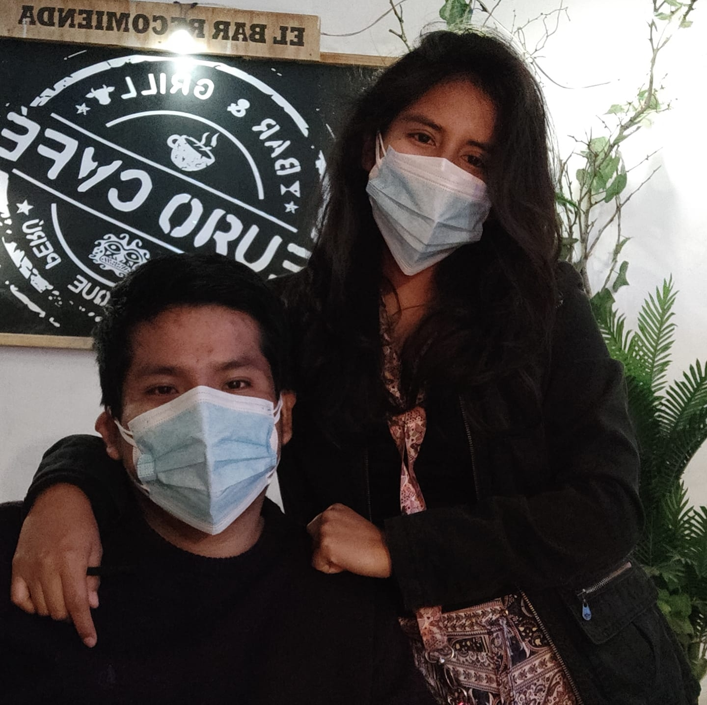

Desarrollador FullStack WEB - Jhan Caicedo
Analista TI Senior - Scotiabank Perú
Bachiller de la Facultad de Ingeniería Industrial y de Sistemas de la Universidad Nacional de Ingeniería (UNI) con experiencia e interés en desarrollo de aplicativos y automatización de procesos. Mi trayectoria incluye el apoyo en el área de Gestión de la Demanda, Certificación y desarrollo de aplicativo software en lenguaje Java, Python, JavaScript y HTML-CSS. Me considero una persona autodidacta, responsable y con capacidad de adaptación al cambio.
